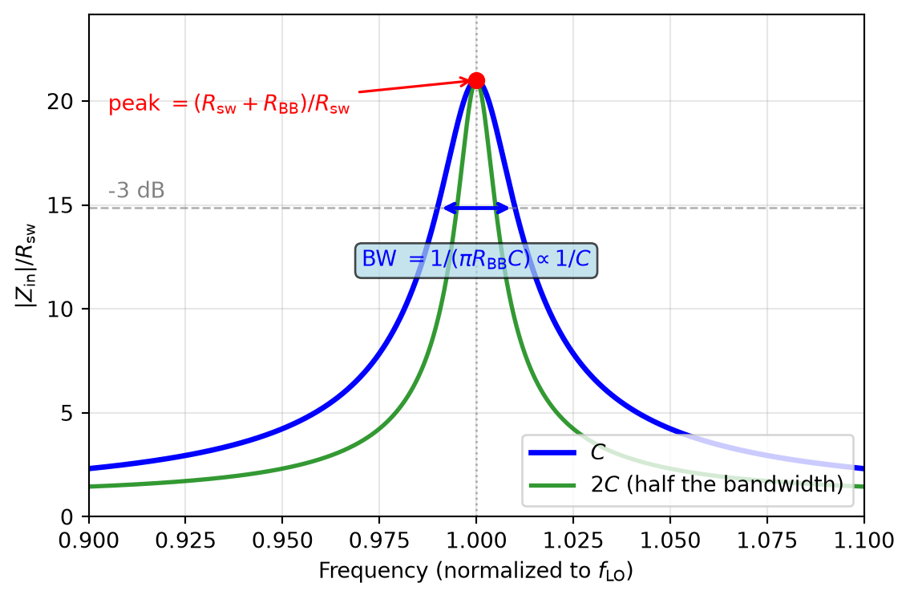
Radio-Frequency Integrated Circuits
Figure 41: Mixer block diagram.
\[ \omega_\mathrm{out} = \omega_\mathrm{in} \pm \omega_\mathrm{LO}. \]
Figure 42: A squarer as a nonlinear mixer.
\[ \begin{split} s_\mathrm{out}(t) = [ s_\mathrm{in}(t) + s_\mathrm{LO}(t) ]^2 &= \cos(\omega_\mathrm{in} t + \omega_\mathrm{LO} t) + \cos(\omega_\mathrm{in} t - \omega_\mathrm{LO} t) \\ &+ 1 + \frac{1}{2} \cos(2 \omega_\mathrm{in} t) + \frac{1}{2} \cos(2 \omega_\mathrm{LO} t). \end{split} \tag{50}\]
Figure 43: A diode mixer.
Figure 44: A switch as a time-variant mixer.
\[ \begin{split} s_\mathrm{out}(t) &= s_\mathrm{in}(t) \cdot \underbrace{\frac{1}{2} \left\{ 1 + \mathrm{sgn}[ s_\mathrm{LO}(t) ] \right\}}_\text{Fourier series} \\ &= s_\mathrm{in}(t) \cdot \left[ \frac{1}{2} + \frac{2}{\pi} \sin(\omega_\mathrm{LO} t) + \frac{2}{3 \pi} \sin(3 \omega_\mathrm{LO} t) + \frac{2}{5 \pi} \sin(5 \omega_\mathrm{LO} t) + \ldots\right] \end{split} \]
\[ s_\mathrm{out}(t) = \frac{1}{\pi} \cos(\omega_\mathrm{in} t \pm \omega_\mathrm{LO} t) + \ldots \tag{51}\]
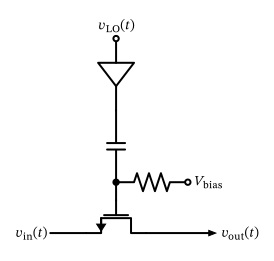
Figure 45: A MOSFET switch used as a mixer with an ac-coupled LO signal.
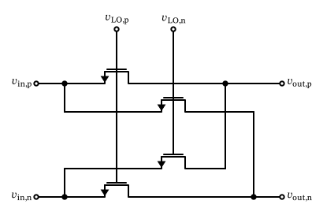
Figure 46: A fully-differential double-balanced MOSFET mixer.
\[ s_\mathrm{out}(t) = \frac{2}{\pi} \cos(\omega_\mathrm{in} t \pm \omega_\mathrm{LO} t) + \ldots \tag{52}\]
Single-Balanced vs. Double-Balanced
Take care not to attribute these 6 dB to the double-balancing itself. A single-balanced mixer (a single-ended input driving a differential pair of switches with a differential output) already realizes the \(\pm 1\) switching function, and therefore already achieves the \(2/\pi\) conversion gain. What the second level of balancing buys is port-to-port isolation: in the double-balanced mixer of Figure 46 both the LO feedthrough and the RF feedthrough appear as common-mode signals at the differential output and are thus suppressed. This is why the double-balanced structure is the workhorse in practice, not because of any additional conversion gain.
Figure 47: An RX front-end using a current-mode (passive) mixer.
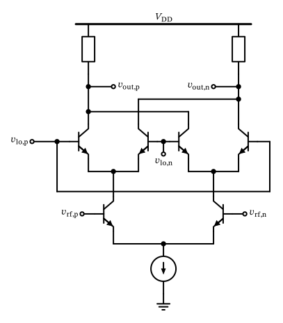
Figure 48: A Gilbert mixer based on bipolar differential pairs.
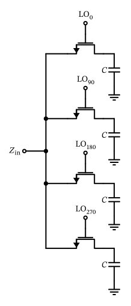
Figure 49: A 4-phase N-path filter.
\[ Z_\mathrm{in}(\omega_\mathrm{LO} + \Delta \omega) \approx R_\mathrm{sw} + Z_\mathrm{BB}(\Delta \omega), \tag{53}\]

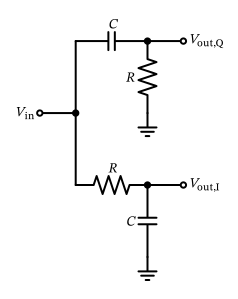
Figure 51: An RC/CR IQ generation network.
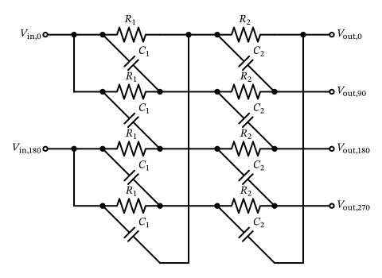
Figure 52: A two-stage polyphase network.
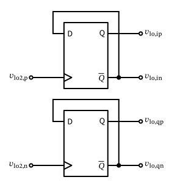
Figure 53: I/Q generation with a divide-by-2.
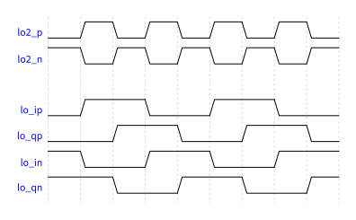
Figure 54: Input and output waveforms of I/Q generation with a divide-by-2.
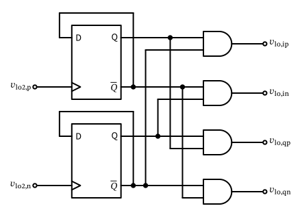
Figure 55: I/Q generation with a divide-by-2 and 25% duty cycle generation.
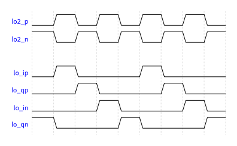
Figure 56: Input and output waveforms of I/Q generation with a divide-by-2 and 25% duty cycle generation.
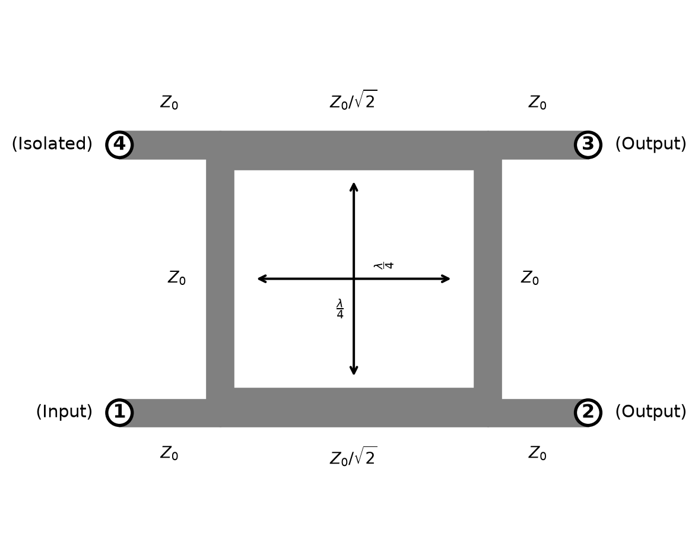
\[ S = \frac{1}{\sqrt{2}} \begin{bmatrix} 0 & -j & -1 \\ -j & 0 & 0 \\ -1 & 0 & 0 \end{bmatrix}. \tag{54}\]
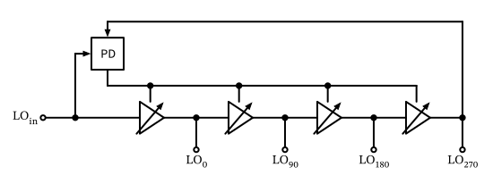
Figure 58: LO multiphase generation by delay-locked loop (DLL).